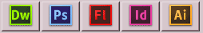
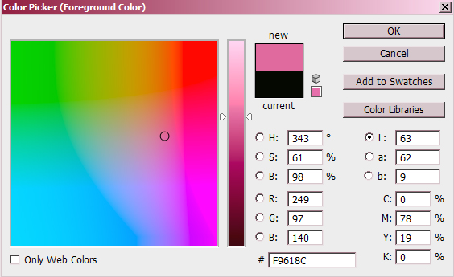
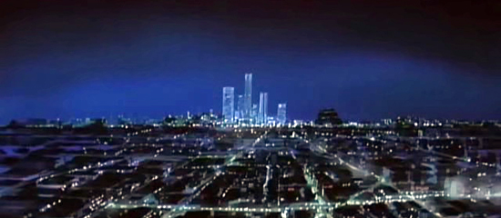

thank you for taking your time to read through all this little interview you can also contact me for more questions or take a look at my portfolio as well!
Hello everyone! my name is Maria Jose Belmonte i'm 23 years old and i'm from Madrid, Spain and i'm the webmistress and creator of Purple Burst! one of my goals while making my own website was to create a place where I can transmit a couple of things about myself, my tastes, hobbies and of course my professional works that i've been doing along my whole career as a website designer.
That's my goal with Purple Burst and the reason of why i've decided to make this website. It's been a long way already since I started to create my own little simple websites at school when I was just a child working with FrontPage 2000 back in the day I thought (and still do) the Internet has a lot of potential for everything you want to achieve it's an unlimited source of information of all kinds and my goal is to cooperate in the development of it as much as I can that's why i've commited myself to learn to this day since the internet is always evolving every second!
I'm sure you have a lot of questions about me and my professional career on this field and that's why i've prepared a small interview with the most common questions that people usually ask me!
What kind of design tools can you use?

I'm certified user of most of the Adobe Creative Suite for Web applications such as Dreamweaver, Flash, Photoshop, Illus, or InDesign along with some legacy products that are discontinued or are not so common nowadays such as Freehand or GoLive as well.
That's great! hum... and what about on the web programing side?
On the programing side i'm familiarized with the most common cross-platform languages used in nowadays websites such as Javascript and PHP aside from the basic HTML and CSS. I also have kwoledge in the use of diferent frameworks to speed up the progress of a project or to add fancy stuff to a website such as jQuery or AS3 for special effects on dynamic websites.

..are you familiar also with those scripts called CMS? do you use them in your works?
To be honest I rather prefer to design and program the whole thing by myself but I can also use almost any kind of the most popular CMS systems on the market to speed up the process of making a nice looking website if the customer don't want a website made through the "traditional" way I also have knowledge in modding and managing those systems as well.
Aside from all the technical stuff and all that yadda-yadda what could you say about your personal skills?
On my personal skills side I can say that i'm a very team-work oriented kind of person, had the oportunity to work both personally and professionally with all kinds of teams and partners in diferent kinds of web projects, i'm also a very organized person sometimes to the extreme but I'm this kind of person that likes to get always from the point A to the point B no matter what obstacles are on my way.
What's with the design of the website I think it's a little bit dull....
Well, this is a very personal project and my goal was to make a very simple and minimalistic website to show my digital works to the world hence that's why i've decided to make something simple, yet attrative to the user that is browsing the website. I make a lot of emphasis on usability and navigation i'm this kind of person that likes to keep the things "simple" in order to transmit a message in the best way as possible.
Correct me if i'm wrong but your site is called Purple Burst yet I only see pink stuff over here!

I've decided to use this purple-pink ish color mainly because I consider it that it fits very well with the black background of the website plus is a color that matches very well my personality since i'm neither too pink or too purple =P
Why you decided to make a dark theme for your site? are you some kind of dark girl or something like that?
I guess the explanation regarding this should be defined with a simple word which is "Cyberpunk" i'm a huge fan of science fiction and futuristic stuff hence that's why i've choosed to make this dark theme for my website what i'm trying to transmit here is that you are walking in the night in a futuristic city surrounded by shining neon lights everywhere, flying cars, robots, and all that kind stuff similar to the scenery seem in movies such as Blade Runner or The Fifth Element.

That's what im trying to transmit with my works progress, future, innovation of all kinds because I highly beleive that the Internet is one of our keys for communication in the present and future.